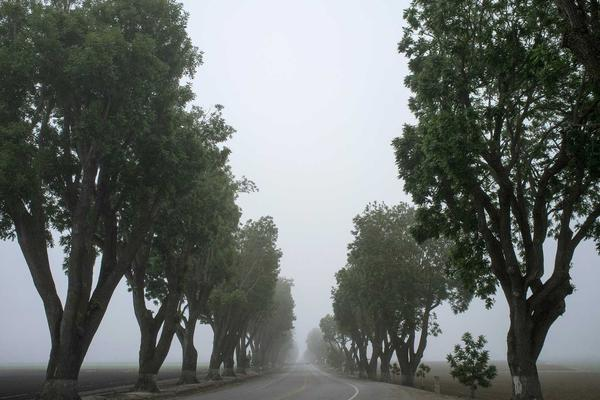

Climbing Kilimanjaro: Trail Notes

Kilimanjaro is the highest mountain in Africa and the highest I'd ever stood on — 5,895 metres (19,341 feet) at Uhuru Peak. You don't technically climb it so much as walk slowly up it for the better part of a week, and the whole challenge is your body coping with the thinning air. "Pole pole," the guides say constantly. Slowly, slowly.
The route, day by day
I took the Machame route, six days up and a day and a half back down. You pass through about five different climate zones — rainforest, then moorland, then high alpine desert, then ice. Going through summer and winter in one walk is genuinely surreal.
| Day | Camp | Altitude |
|---|---|---|
| 1 | Machame | 3,000 m |
| 2 | Shira | 3,840 m |
| 3 | Barranco | 3,950 m |
| 4 | Barafu | 4,600 m |
| 5 | Uhuru Peak | 5,895 m |
Summit night
You leave Barafu camp around midnight to reach the top at sunrise. It was the hardest physical thing I have ever done — freezing, pitch dark, headache thumping, taking ten tiny steps and stopping to gasp. The sky was unbelievable, more stars than black. When the sun finally hit the glaciers at the crater rim I was too wrecked to cry, which is how I knew it was real.
If you go: tip your guides and porters properly, they are the reason anyone gets up that mountain. And listen when they say pole pole. Slow is the only way that works.